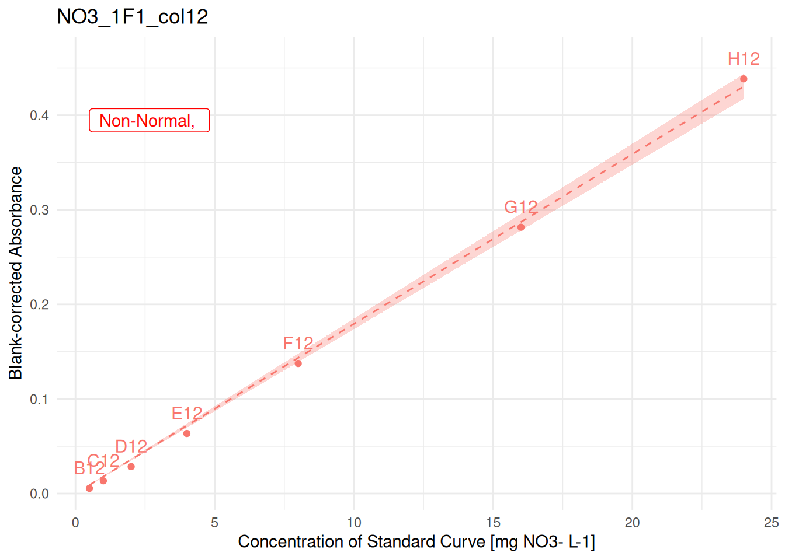
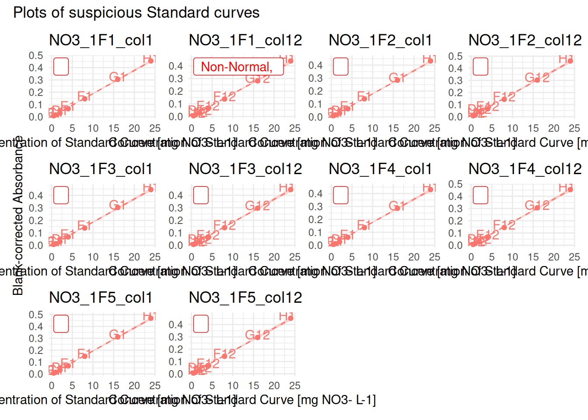
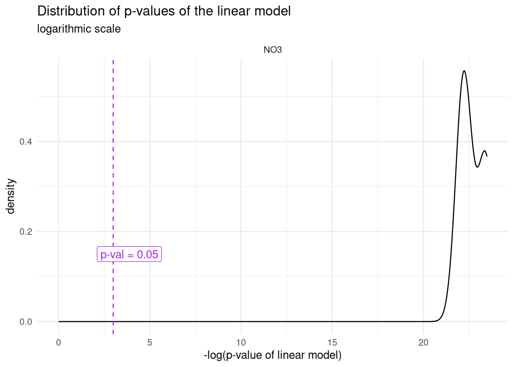
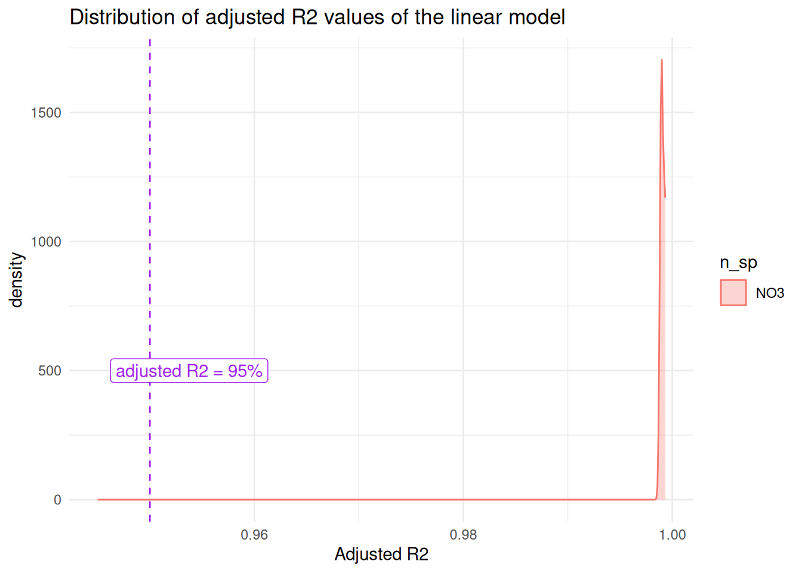
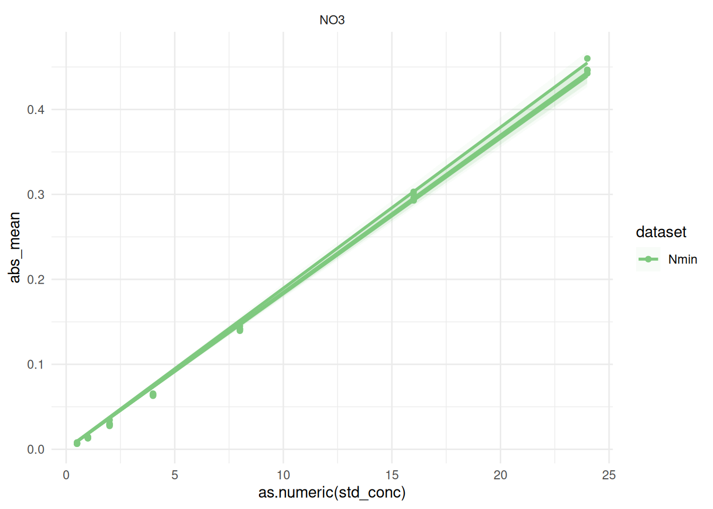

TODO
write out last sections: 2.6, 3 and 4
Consider creating a function for the multiple-curve QC (+ explain idea why it is relevant to look at it)
For conversion: explain well difference btw mg N-sp/L and mg N/L, and how it relates to molar masses
Work in progress
This vignette is still under development, bugs are to be expected
Introduction
In this vignette, we cover the steps from blank-corrected absorbance to concentration in nitrogen [mg N / L], although this can easily be used for dosing other molecules, as long as the Beer-Lambert equation is respected (the relationship between absorbance and concentration is linear)1.
Prerequisites
data has been imported and tidied, see
vignette("import-tidy", package = "plate2N")data has been blank-corrected, see
vignette("blank-correction", package = "plate2N")Outliers have been removed throughout that process, see previous vignettes and also
vignette("handling-outliers", package = "plate2N")
1 - Get blank-corrected data
Little reminder how how the blank-corrected data looks like (see prerequisites)
sample_corrected
#> # A tibble: 264 × 25
#> row column well_id unique_well_id dataset plate_id map abs_corrected
#> <chr> <chr> <chr> <chr> <chr> <chr> <chr> <dbl>
#> 1 A 2 A2 A2_NO3_1F1 Nmin NO3_1F1 81_t1_z2 0.0312
#> 2 A 2 A2 A2_NO3_1F2 Nmin NO3_1F2 97_t1_z1 0.0249
#> 3 A 2 A2 A2_NO3_1F3 Nmin NO3_1F3 89_t1_z3 0.0104
#> 4 A 2 A2 A2_NO3_1F4 Nmin NO3_1F4 81_t1_z1 0.0342
#> 5 A 2 A2 A2_NO3_1F5 Nmin NO3_1F5 Std_3_t1 0.0832
#> 6 A 3 A3 A3_NO3_1F1 Nmin NO3_1F1 82_t1_z2 0.0452
#> 7 A 3 A3 A3_NO3_1F2 Nmin NO3_1F2 98_t1_z1 0.0219
#> 8 A 3 A3 A3_NO3_1F3 Nmin NO3_1F3 90_t1_z3 0.0124
#> 9 A 3 A3 A3_NO3_1F4 Nmin NO3_1F4 82_t1_z3 0.0543
#> 10 A 3 A3 A3_NO3_1F5 Nmin NO3_1F5 98_t1_z3 0.0232
#> # ℹ 254 more rows
#> # ℹ 17 more variables: blank_sdev <dbl>, blank_coeff_var_percent <dbl>,
#> # date <lgl>, time <lgl>, sampling_time <chr>, std_column <chr>,
#> # std_sp <chr>, std_unit <chr>, std_prep <chr>, std_conc <chr>,
#> # sample_dilution <chr>, extractant_column <lgl>, extractant_sp <chr>,
#> # extractant_unit <chr>, extractant_conc <dbl>, empty_column <lgl>,
#> # wait_min <chr>
std_corrected
#> # A tibble: 70 × 26
#> row column well_id unique_well_id dataset plate_id unique_curve_id map
#> <chr> <chr> <chr> <chr> <chr> <chr> <chr> <chr>
#> 1 B 1 B1 B1_NO3_1F1 Nmin NO3_1F1 NO3_1F1_col1 Std
#> 2 B 1 B1 B1_NO3_1F2 Nmin NO3_1F2 NO3_1F2_col1 Std
#> 3 B 1 B1 B1_NO3_1F3 Nmin NO3_1F3 NO3_1F3_col1 Std
#> 4 B 1 B1 B1_NO3_1F4 Nmin NO3_1F4 NO3_1F4_col1 Std
#> 5 B 1 B1 B1_NO3_1F5 Nmin NO3_1F5 NO3_1F5_col1 Std
#> 6 B 12 B12 B12_NO3_1F1 Nmin NO3_1F1 NO3_1F1_col12 Std
#> 7 B 12 B12 B12_NO3_1F2 Nmin NO3_1F2 NO3_1F2_col12 Std
#> 8 B 12 B12 B12_NO3_1F3 Nmin NO3_1F3 NO3_1F3_col12 Std
#> 9 B 12 B12 B12_NO3_1F4 Nmin NO3_1F4 NO3_1F4_col12 Std
#> 10 B 12 B12 B12_NO3_1F5 Nmin NO3_1F5 NO3_1F5_col12 Std
#> # ℹ 60 more rows
#> # ℹ 18 more variables: abs_corrected <dbl>, date <lgl>, time <lgl>,
#> # sampling_time <chr>, std_column <chr>, std_sp <chr>, std_unit <chr>,
#> # std_prep <chr>, sample_dilution <chr>, extractant_column <lgl>,
#> # extractant_sp <chr>, extractant_unit <chr>, extractant_conc <dbl>,
#> # empty_column <lgl>, wait_min <chr>, std_conc <chr>, blank_sdev <dbl>,
#> # blank_coeff_var_percent <dbl>2 - Compute linear model on Standard Curves
lm_std_curve() computes a per-curve linear regression between 2 columns of the input data with lm(abs_corrected ~ 0 + std_conc, data = curve) which is the linear model that constraints the curve to go through the origin. lm_std_curve() returns a table containing one row per standard curve, and a series of information characterizing the performance of the linear model for that curve (see below and also ?lm_std_curve().
2.1 - Compute linear model, round 1
lm_std_curve() defines the curve based on the groups (dplyr::group_by()) of the input data (std_corrected in the example below). Additionally to the columns abs_corrected and std_conc (numeric), the function also requires the column unique_curve_id.
(lm_table_raw <- lm_std_curve(std_corrected |> dplyr::group_by(plate_id, column)))
#> # A tibble: 10 × 11
#> plate_id unique_curve_id std_sp slope r_squared adj_r_squared lm_p
#> <chr> <chr> <chr> <dbl> <dbl> <dbl> <dbl>
#> 1 NO3_1F1 NO3_1F1_col1 NO3 0.0189 0.999 0.999 6.49e-11
#> 2 NO3_1F1 NO3_1F1_col12 NO3 0.0179 0.999 0.999 2.79e-10
#> 3 NO3_1F2 NO3_1F2_col1 NO3 0.0178 0.999 0.999 6.03e-11
#> 4 NO3_1F2 NO3_1F2_col12 NO3 0.0190 0.999 0.999 1.64e-10
#> 5 NO3_1F3 NO3_1F3_col1 NO3 0.0186 0.999 0.999 2.07e-10
#> 6 NO3_1F3 NO3_1F3_col12 NO3 0.0184 0.999 0.999 4.07e-10
#> 7 NO3_1F4 NO3_1F4_col1 NO3 0.0178 0.999 0.999 2.16e-10
#> 8 NO3_1F4 NO3_1F4_col12 NO3 0.0188 0.999 0.999 2.43e-10
#> 9 NO3_1F5 NO3_1F5_col1 NO3 0.0194 0.999 0.999 1.31e-10
#> 10 NO3_1F5 NO3_1F5_col12 NO3 0.0185 0.999 0.999 3.49e-10
#> # ℹ 4 more variables: normality_lm_residuals <chr>, shapiro_p <dbl>,
#> # homoscedasticity_lm_residuals <chr>, breusch_pagan_p <dbl>2.2 - QC Standard curves - check conditions of linear model
The function suspicious_lm() extracts from an lm_table` as produced above all plates where the linear model is not optimal, i.e., either the p-value of the model is above 0.05, or its residuals are not normally distributed, or there is heteroscedasticity of residuals. lm_table_suspicious can serve for identification of outliers
# extract all plates where "something" is not perfect
(lm_table_suspicious <- lm_table_raw |> suspicious_lm())
#> # A tibble: 1 × 11
#> plate_id unique_curve_id std_sp slope r_squared adj_r_squared lm_p
#> <chr> <chr> <chr> <dbl> <dbl> <dbl> <dbl>
#> 1 NO3_1F1 NO3_1F1_col12 NO3 0.0179 0.999 0.999 2.79e-10
#> # ℹ 4 more variables: normality_lm_residuals <chr>, shapiro_p <dbl>,
#> # homoscedasticity_lm_residuals <chr>, breusch_pagan_p <dbl>For visual aid (useful for larger data sets, plot_list_lm() creates a list of plots of each curve given as argument (here: suspicious lm’s). Calling individual plots can help spotting possible outlier wells, which can be removed with similar steps as shown above.
suspicious_lm_plotlist <- plot_list_lm(
lm_data = lm_table_suspicious,
std_data = std_corrected)
# check one plot out
suspicious_lm_plotlist[[1]]
When there are numerous suspicious curves, we can take advantage of the package patchwork` to display multiple plots (example hereunder with the whole lm_table)
full_plotlist <- plot_list_lm(
lm_data = lm_table_raw,
std_data = std_corrected)
patchwork::wrap_plots(full_plotlist, axis_titles = "collect_y") +
patchwork::plot_annotation(title = "Plots of suspicious Standard curves")
2.3 - outlier removal
At this point, you may want to remove obvious outlier wells. Follow steps as shown in vignettes from prerequisites to remove_wells().
Let’s say that we want to remove well E12 from plate NO3_1F1 in dataset Nmin:
to_remove <- tibble::tibble(
dataset = "Nmin",
plate_id = "NO3_1F1",
well_id = "E12"
)
std_corrected_wash1 <- std_corrected |> remove_wells(to_remove)From now on, we no longer use std_corrected, but only std_corrected_wash1. We recommend always running one more round of quality check on the cleaned datasets before approving regression equations.
2.4 - Per-dilution averages (if 2+ curves per plate)
Once the very few monstrously wrong wells have been removed from single curves, in the case where several curves were pipetted per 96-well plate, we still need to perform a per-dilution average of absorbance. Indeed, there have been 2 events of pipetting of the same dilution, rather than 2 successive dilutions.
WARNING
The next step computes per plate per row means for the standard curves.
If some wells have been swapped in some plates, this may cause problems. Make sure there was no pipetting issue, or correct raw data or solve it through code
std_dilution_average() does that and creates an artificial “column 13”.
std_dilution_avg <- std_corrected_wash1 |> std_dilution_average()2.5 - Compute linear model + QC - round 2
We can now rerun the linear model on the cleaned and (if required) per-dilution averaged, by repeating the same steps as above: computation of linear model, identification of suspicious curves and plotting
(lm_std_mean <- lm_std_curve(std_dilution_avg |> dplyr::rename(abs_corrected = abs_mean)))
#> # A tibble: 5 × 11
#> plate_id unique_curve_id std_sp slope r_squared adj_r_squared lm_p
#> <chr> <chr> <chr> <dbl> <dbl> <dbl> <dbl>
#> 1 NO3_1F1 NO3_1F1_col13 NO3 0.0184 0.999 0.999 7.36e-11
#> 2 NO3_1F2 NO3_1F2_col13 NO3 0.0184 0.999 0.999 6.32e-11
#> 3 NO3_1F3 NO3_1F3_col13 NO3 0.0185 0.999 0.999 2.47e-10
#> 4 NO3_1F4 NO3_1F4_col13 NO3 0.0183 0.999 0.999 2.23e-10
#> 5 NO3_1F5 NO3_1F5_col13 NO3 0.0190 0.999 0.999 2.09e-10
#> # ℹ 4 more variables: normality_lm_residuals <chr>, shapiro_p <dbl>,
#> # homoscedasticity_lm_residuals <chr>, breusch_pagan_p <dbl>
(lm_suspicious_mean <- lm_std_mean |> suspicious_lm())
#> # A tibble: 0 × 11
#> # ℹ 11 variables: plate_id <chr>, unique_curve_id <chr>, std_sp <chr>,
#> # slope <dbl>, r_squared <dbl>, adj_r_squared <dbl>, lm_p <dbl>,
#> # normality_lm_residuals <chr>, shapiro_p <dbl>,
#> # homoscedasticity_lm_residuals <chr>, breusch_pagan_p <dbl>Good news, there are no more suspicious linear models anymore. Should there be any, one more round of QC as described above can still be helpful (plot_list_lm()).
Let’s store the last correction into a clean variable name to reduce possible confusion, and let’s compute all the plots in a big list, for storage purposes. We could then export this as one output data in a single list with readr::write_rds()`.
std_data_clean <- std_dilution_avg
lm_table_clean <- lm_std_mean
lm_plots_clean <- plot_list_lm(
lm_table_clean, std_data_clean |> dplyr::rename(abs_corrected = abs_mean))
lm_output <- list(
"std_data_clean" = std_data_clean,
"lm_table_clean" = lm_table_clean,
"lm_plots_clean" = lm_plots_clean,
"sample_corrected" = sample_corrected
)
# just an example of how to save this in a file for downstream steps
#lm_output |> write_rds("output/data/lm_output.rds")2.6 - Multiple curve QC
TODO –> make a function? Remove this?
First, let’s look at the distribution of p-values of the std curve regressions
p_threshold <- 0.05
lm_output$lm_table_clean |>
tidyr::separate_wider_delim(
cols = unique_curve_id, delim = "_",
names = c("n_sp", "rest"), too_many = "merge") |>
ggplot2::ggplot(ggplot2::aes(x = -log(lm_p))) +
ggplot2::theme_minimal() +
# geom_histogram() +
ggplot2::geom_density() +
ggplot2::geom_vline(ggplot2::aes(xintercept = -log(p_threshold)), linetype = 2, colour = "purple") +
ggplot2::annotate(
geom = "label", label = paste0("p-val = ", p_threshold),
x = -log(p_threshold), y = 0.15, hjust = 0.25, colour = "purple" ) +
ggplot2::facet_wrap(~n_sp, nrow = 3) +
ggplot2::xlim(0,max(-log(lm_output$lm_table_clean$lm_p))) +
ggplot2::xlab("-log(p-value of linear model)") +
ggplot2::labs(
title = "Distribution of p-values of the linear model",
subtitle = "logarithmic scale"
)
Then, same with R_squared (or adjusted?)
threshold <- 95
lm_output$lm_table_clean |>
tidyr::separate_wider_delim(
cols = unique_curve_id, delim = "_",
names = c("n_sp", "rest"), too_many = "merge") |>
ggplot2::ggplot(ggplot2::aes(x = adj_r_squared, colour = n_sp, fill = n_sp)) +
ggplot2::theme_minimal() +
#geom_histogram() +
ggplot2::geom_density(alpha = 0.3) +
ggplot2::geom_vline(ggplot2::aes(xintercept = 0.95), linetype = 2, colour = "purple") +
ggplot2::annotate(
geom = "label", label = paste0("adjusted R2 = ", threshold, "%"),
x = threshold/100, y = 500, hjust = 0.25, colour = "purple" ) +
#facet_wrap(~n_sp, nrow = 3, scales = "free_y") +
ggplot2::xlim(
0.945,
max(lm_output$lm_table_clean$adj_r_squared)) +
ggplot2::xlab("Adjusted R2") +
ggplot2::labs(
title = "Distribution of adjusted R2 values of the linear model"
)
Now we plot all curves on same plot
colors <- c("#7FC97F", "#BEAED4", "#FDC086")
lm_output$std_data_clean |>
dplyr::filter_out(dataset == "TDN") |>
ggplot2::ggplot(ggplot2::aes(x = as.numeric(std_conc), y = abs_mean, groups = plate_id, colour = dataset, fill = dataset)) +
ggplot2::theme_minimal()+
ggplot2::geom_smooth(
formula = y~x-1, method = "lm", se = TRUE,
alpha = 0.05) +
ggplot2::geom_point() +
ggplot2::facet_wrap(~std_sp, scales = "free") +
ggplot2::scale_color_discrete(palette = colors[1:2]) +
ggplot2::scale_fill_discrete(palette = colors[1:2]) 
Now, finally, I decide that I am happy with my standard curves, so I can move on to apply the equations on my data
3 - Infer sample concentration from regression equation
Check that we are now left with only one curve per plate (i.e., we indeed took a per-dilution average)
if (
(lm_output$std_data_clean |> dplyr::group_by(plate_id) |> dplyr::n_groups()) ==
(lm_output$std_data_clean |> dplyr::group_by(unique_curve_id) |> dplyr::n_groups())
) {message("All good: there is exactly one curve per plate")} else {
warning("Warning: there is at least one plate with several curves")
}
#> All good: there is exactly one curve per plateRegression equation is Abs = slope * Concentration
There is a default vector containing relevant molar masses. Make sure to append it with values that are relevant for your study. This is needed to convert concentrations from mg molecule per L to mg element per L (e.g., mg NO3/L to mg N/L)
molar_masses
#> N NO3 NO2 NH4
#> 14.0069 62.0051 46.0057 36.0775Here, we
connect regression data to sample absorbance data with
reg_join_abs().apply the regression equation to go from absorbance to concentration in mg N-sp per L
convert unit to mg N per L using
molar_massesandconvert_molec().
data_mg_N_L <-
# add slope + info regression (p-val and R2) to absorbance data
reg_join_abs(lm_output$lm_table_clean, lm_output$sample_corrected, target_sp = "N") |>
# compute concentration from absorbance
dplyr::mutate(conc_mgNsp_L = abs_corrected / slope) |>
convert_molec(masses = molar_masses)
data_mg_N_L
#> # A tibble: 264 × 12
#> dataset plate_id map abs_corrected std_sp target_sp std_unit slope
#> <chr> <chr> <chr> <dbl> <chr> <chr> <chr> <dbl>
#> 1 Nmin NO3_1F1 81_t1_z2 0.0312 NO3 N mg NO3- L-1 0.0184
#> 2 Nmin NO3_1F2 97_t1_z1 0.0249 NO3 N mg NO3- L-1 0.0184
#> 3 Nmin NO3_1F3 89_t1_z3 0.0104 NO3 N mg NO3- L-1 0.0185
#> 4 Nmin NO3_1F4 81_t1_z1 0.0342 NO3 N mg NO3- L-1 0.0183
#> 5 Nmin NO3_1F5 Std_3_t1 0.0832 NO3 N mg NO3- L-1 0.0190
#> 6 Nmin NO3_1F1 82_t1_z2 0.0452 NO3 N mg NO3- L-1 0.0184
#> 7 Nmin NO3_1F2 98_t1_z1 0.0219 NO3 N mg NO3- L-1 0.0184
#> 8 Nmin NO3_1F3 90_t1_z3 0.0124 NO3 N mg NO3- L-1 0.0185
#> 9 Nmin NO3_1F4 82_t1_z3 0.0543 NO3 N mg NO3- L-1 0.0183
#> 10 Nmin NO3_1F5 98_t1_z3 0.0232 NO3 N mg NO3- L-1 0.0190
#> # ℹ 254 more rows
#> # ℹ 4 more variables: adj_r_squared <dbl>, lm_p <dbl>, conc_mgNsp_L <dbl>,
#> # conc_mgN_L <dbl>4 - Epilogue
We now have clean and tidy concentration data